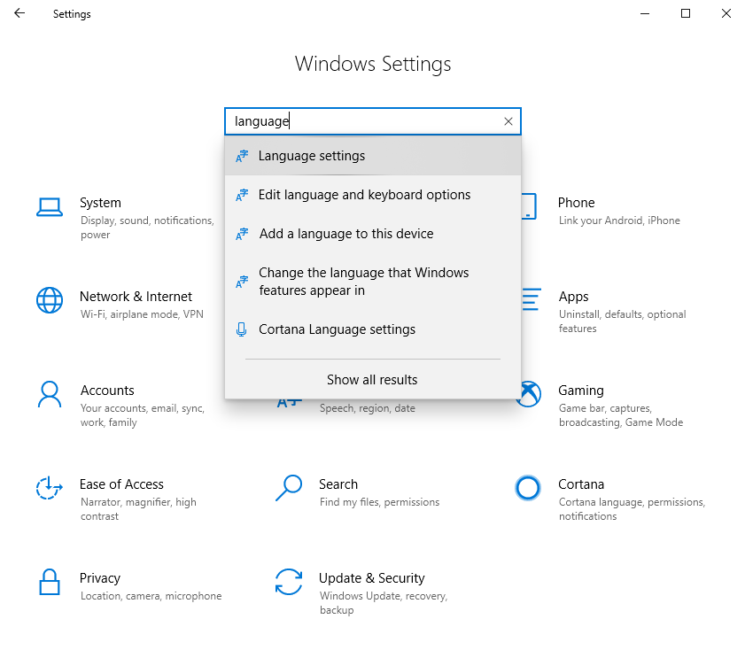
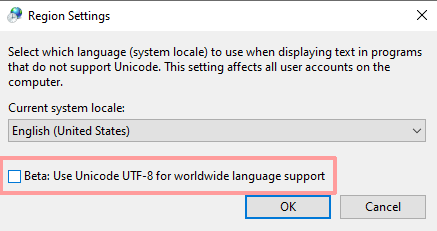

<link href="https://fonts.googleapis.com/css?family=Open+Sans&display=swap" rel="stylesheet">
<link href="https://fonts.googleapis.com/css?family=IBM+Plex+Mono&display=swap" rel="stylesheet">
<link href="https://fonts.googleapis.com/css?family=Exo+2&display=swap" rel="stylesheet">
<link rel="stylesheet" type="text/css" href="resources/fonts/fontawesome/css/all.min.css" />
<style>

    html, body {
        font-family: "Exo 2";
        font-size: 16px;
    }


    h1, h2, h3 { font-weight: normal; }

    h2 { margin-block-start: 1.13em; }

    .os {
        width: 64px;
        height: 64px;
        color: red;
        fill: currentColor;

        /*filter: invert(27%) sepia(51%) saturate(2878%) hue-rotate(136deg) brightness(104%) contrast(97%);
*/


        filter: brightness(140%);
    }

    #apple {
        color: red;
        fill: currentColor;

    }

    a {
        color: #009688;
        text-decoration: none;
    }

    a:hover {
        filter: brightness(50%);
    }

    .file-list {
        display: flex;
        flex-direction: column;
    }

    .file-link {
        display: flex;
        flex-direction: row;
        padding: 6px;
        font-size: 16px;
    }

    .file {
        min-width: 220px;
    }


    .icon {
        width: 24px;
        height: 24px;
        background-position: center;
        background-repeat: no-repeat;
        background-size: contain;
        margin-bottom: -10px;
        margin-right: 14px;
    }

    .icon-github { background-image: url('resources/images/github.svg') }
    .icon-docker { background-image: url('resources/images/docker.svg'); width: 32px; height: 32px; }

    section {
        padding: 0px 62px 0px 62px;
        display: flex;
        flex-direction: row;
    }

    @media (max-width: 1280px) { 
        section {
            flex-direction: column;
        }
    }

    .intro {
        /*width: 50vw;*/

    }

    .separator {
        flex: 1;
        min-width: 48px;
    }
    /*
    li:before {
        background-image: url(images/github.svg);
        width: 24px;
        height: 24px;
        border: 1px solid red;*/
/*content: '\1F95E';*/
/*margin-left: -20px;
margin-right: 10px;*//*
display: block;
position: relative;
}*/

    li {
        padding: 4px;
        /*list-style-image: url(images/github.svg);
        padding: .3em 0 1em 40px;*/
    }

    .components li {
        padding: 3px;
    }

    .sha {
        margin-left: 8px;
        padding: 6px 6px 6px 8px;
        border-left: 1px solid #eee;
    }

    .screen-shot {
        width: 580px;
        height: auto;
        border: 2px solid #eee;
       }

    .descr {
        min-width: 100px;
    }

    .dl-wrapper {
        display: flex;
        flex-direction: row;
    }

    .disable {
        opacity: 0.4;
        pointer-events: none;
    }

    [notice] { 
/*        text-align: center;
*/
        margin: 8px 0px 8px 48px;

    }
    
    [red] {
        color: #a00;
    }
    .workaround {
        max-width: 560px;
        height: auto;
        margin: 8px 32px 32px 32px;
        border: 2px solid #ccc;
    }

    [bold] {
        font-weight: bold;
    }

    [monospace] {
        font-family:"Consolas", monospace;
    }

    [row] {
        display: flex;
        flex-direction: row;
    }

    [column] {
        display: flex;
        flex-direction: column;
    }

    [flex] {
        flex: 1;
    }
</style>

<section>
    <div class='intro'>
        <h2>KDX</h2>

        <p>KDX process manager provides zero-effort installation and configuration of the Kaspa 
        software stack when running in a desktop operating system environment.  KDX allows you to run Kaspa 
        full node software as well as Kasparov components that provide Kaspa BlockDAG API services.</p>

        <p>KDX is not a wallet (although it does include Kaspa's command-line wallet demo).</p>
        <p>
            Developers looking to integrate with Kaspa can leverage KDX to easily test integrations
            with their development environments.  In production, developers are enouraged to setup their own deployment
            of the Kaspa software stack by building software from sources or building docker images.
        </p>

        &nbsp;<br/>

        <div row>
            <div flex></div>
            <div></div>
            <div flex></div>
        </div>
        &nbsp;<br/>

    </div>
    <div flex>&nbsp;</div>
    <div class='separator'></div>
    <div flex>&nbsp;</div>
    <div>
        <div><h2>Download KDX</h2></div>
        <div red notice><i class="fal fa-exclamation-triangle fa-lg"></i> Windows Users - Please read the note below!</div>
        <div id="file-list"></div>

        <div style="text-align: left;">
            <hr style="width: 30%; margin:24px 0px 14px 4px;"/>
        </div>
        
        <div>
            <span class="file-link" href=""><div class="icon icon-docker"></div><div>
                Docker images can be generated<br/> directly from KDX sources.
            </div></span>
            
        </div>
        
        
        <div><h2>Sources</h2></div>
        <div>
            <a class="file-link" href=""><div class="icon icon-github"></div><div>http://github.com/kaspanet/kdx</div></a>
        </div>

        <div><h2>KDX Components</h2></div>
        <div>
            <div style="margin-left:24px;">
                KDX package includes the following components:
            </div>
            <ul class="components">
                <li>PostgreSQL (database)</li>
                <li>Mosquitto (MQTT broker)</li>
                <li>Kaspad full node daemon</li>
                <li>Kasparov API server</li>
                <li>Kasparov blockDAG sync server</li>
            </ul>
            <div style="margin-left:24px;">
                Please note that KDX is self-contained - 
                these components will not be
                installed on your computer.
            </div>
        </div>

    </div>
</section>
<section column>
    <div>
        <h2>Developers</h2>
        <ul>
            <li>KDX includes a miniature build toolchain that allows
            you to rebuild Kaspa software stack directly from GitHub sources.</li>
            <li>KDX includes and instance of KExplorer (Kaspa BlockDAG explorer) project configured against local instance of Kasparov API server.</li>
        </ul>

        <h2 red><i class="fal fa-exclamation-triangle fa-lg"></i> Note to Windows Users</h2>
        <p>
            We have recently discovered a compatibility issue between PostgreSQL database module
            and certain types of <u>international (non-US) Windows 10 installations</u>.  This problem especially
            exists across DELL computers with manufacturer pre-installed Windows.
        </p>
        <p>
            <strong red>Symptoms:</strong> Postgres fails to start, giving errors related to Locale settings such as:
           &nbsp; <span monospace>WARNING: 01000: could not determine encoding for locale "English_Israel.utf8": codeset is "CPutf8"</span>
            
        </p>
        <p>
            In short - Microsoft have introduced an experimental beta option for computer locale settings
            that causes a variety of application compatibility issues and on some OEM OS installations
            this option is turned on by default, which it should not be.
        </p>
        <p>
            We can integrate a script to address this in the KDX installer,
            however, it really should be fixed in PostgreSQL itself. <span bold red>While we work on addressing this, you need to
            apply the following workaround:</span>
        </p>
        <br/>
        <p>

            <center>
                <h4>Open Control Panel and search for "Languages"</h4>
                
            </center>
    
            <center>
                <h4>In the Languages panel select "Administrative Language Settings"</h4>
                
            </center>
    
            <center>
                <h4>Select "Change system locale..."</h4>
                
            </center>
    
            <center>
                <h4>Make sure that "Beta: Use Unicode UTF-8" checkbox if OFF</h4>
                
            </center>
    
            <center><h4>Reboot your computer.</h4></center>

            <hr width="50%"/>

        </p>


    </div>
</section>
<!-- section>
    <div>
        <div>
            <h2>Building KDX</h2>
        </div>
    </div>
</section -->
<script>
//    const KDX_VERSION = "1.0.0";
    let fileList = document.getElementById('file-list');
    Object.entries({
        'kdx-1.0.0-windows-x64.exe' : 'installer',
        'kdx-1.0.0-windows-x64.zip' : 'portable',
        'kdx-1.0.1-darwin-x64.dmg' : 'DMG image',
        '-kdx-1.0.1-darwin-x64.zip' : 'portable',
        '-kdx-1.0.0-linux-x64.zip' : 'portable',
    }).forEach(([file,descr]) => {
        let disable = '';
        if(file.charAt(0) == '-') {
            file = build.substring(1);
            disable = 'disable';
        }
        let [filename, extension] = file.split('.');
        let [app,version,os,platform] = filename.split('-');
        fileList.innerHTML += `<div class='dl-wrapper ${disable}'><a class="file-link" href="downloads/${file}"><div class="icon" style="background-image:url('resources/images/${os}.svg')"></div><div class='file'>${file}</div><div class='descr'>${descr}</div></a><a class="sha-link" href="downloads/${file}.sha1sum"><div class='sha'>SHA1</div></a></div>`;
    });
</script>

